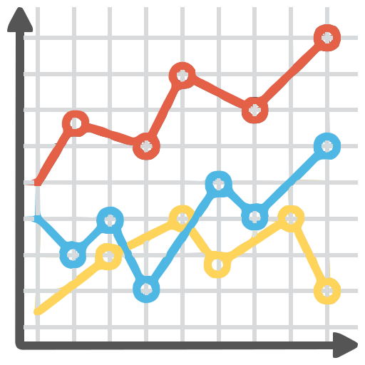
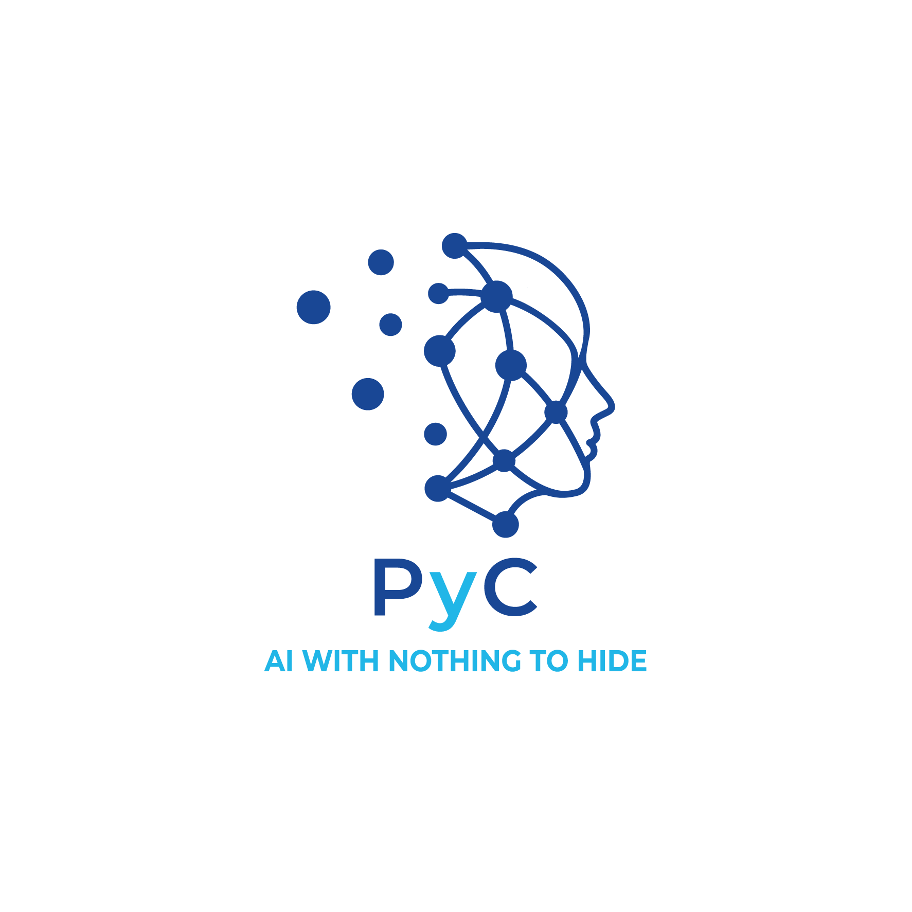
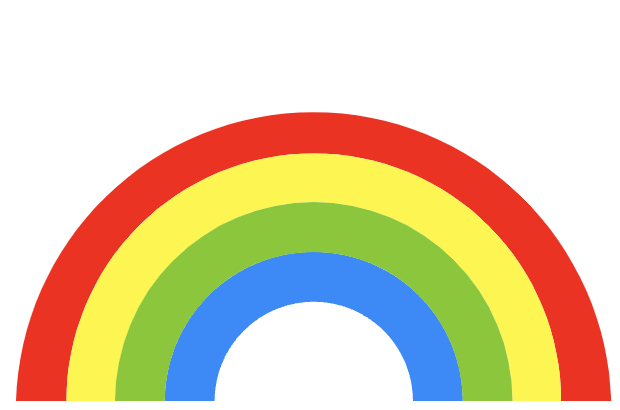

Hi, I am Giovanni 👋! I am a Postdoctoral researcher at the Università della Svizzera Italiana (Lugano, CH), working in the group led by Prof. Silvia Santini.
Previously, I have obtained my Ph.D. in Computer Science from the University of Liverpool (UK), under the supervision of Yannis Goulermas, Vladimir Gusev, Michael Gaultois, and Matthew Rosseinsky. I received my Master's degree in experimental particle physics from the University of Pisa (IT), conducting my thesis within the Mu2e experiment at the Fermi National Laboratory (US), under the supervision of Stefano Di Falco and Robert H. Bernstein.
My research focuses on machine learning for spatio-temporal and time series analysis. Recently, I am extending my scope to non-spatial domains such as physiological and medical time series, and adding layers of explainability.
You can find a list of my publications here.
My primary focus is on ML models for data concerned with both a temporal and spatial dimension. I aim to achieve reliable forecasting and virtual sensing at unseen locations.

I extend my research to ML for Multivariate Time-series and dynamical systems, including forecasting, kernel design, and reservoir computing.
I work on concept-based interpretability, enforcing deep learning models to operate via human-understandable concepts. This allows domain experts to validate, understand, and trust AI systems.
Applications of my research are diverse and range from scientific to industrial. A few examples include climate, sustainability, energy forecasting and material weathering.

PyC is a Python library built upon PyTorch and PyTorch Lightning to easily implement concept-based deep learning models.

We use full-history weathering data for paints formulation to predict long term performances in untested locations. Ultimately, the extraction of greater formulatory information can guide the design of safe and durable materials.
Funded by Beckers